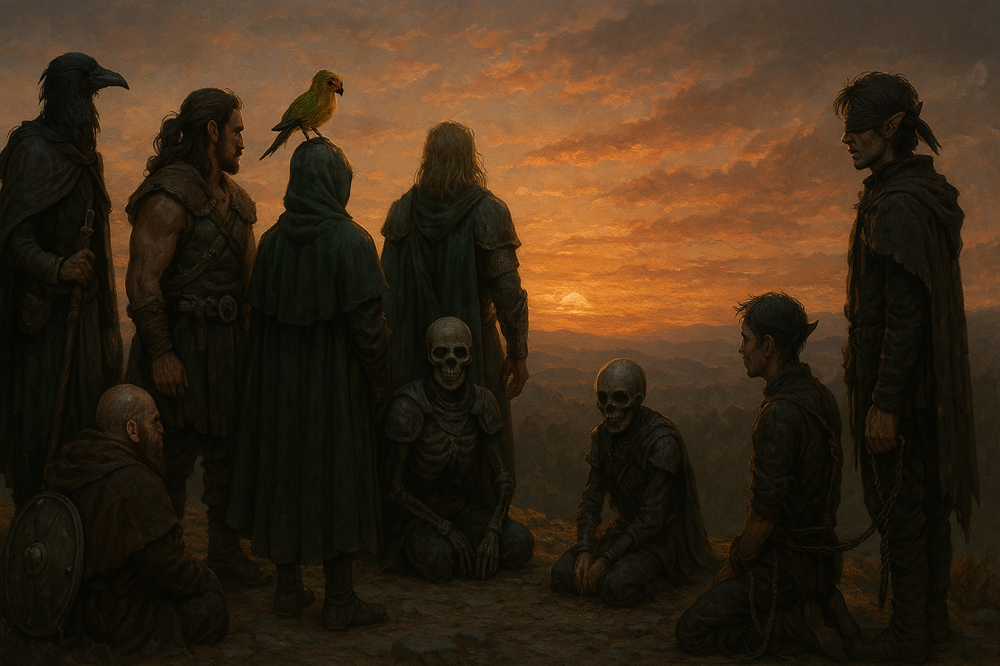

Chapter 2: Hatched Companion
Deep into Lothum

Deep into Lothum
15049.09.05
因為受到月光狩獵會的攻擊，大家整夜都睡得不太好。華生更在 Tweeter 守夜時，因為不放心他的狀況，幾乎都在假寐，幸好他沒有再出現任何意外。
天亮後，冒險者們準備出發繼續前進。Tweeter 和華生私下討論著昨晚撿到的面具。Tweeter 發現月光狩獵會成員們的面具底下，都是坑坑疤疤的皮膚，更令人驚駭的是，儘管面具有特別做出雙眼的凹槽，他們的臉上卻沒有眼睛，只有凹陷的眼窩。最終，在 Lott 和 Pascal 的見證下，華生戴上了純白的面具，作為嘗試。華生感到暈眩，腦中浮現聽不懂的妖精語禱詞。華生將面具取下，而此時他的臉上還沒有受到任何侵害。華生再度鼓起勇氣，戴上較為特別的那副面具。與純白的面具相似，他一樣聽見妖精語禱詞，但內容明顯與前者不同，且更為密集，華生也更難控制自己的身體。在夥伴的協助下，他終於將面具拔下，臉上也還保持著原本的樣貌。
為了確認面具的功效，冒險者們討論後，決定再拿 Phola 作為試驗，誘騙他面具上有酒的香氣，讓他自己戴上純白的面具。他們希望看看未來能否讓敵人戴上面具以癱瘓敵人的行動。Phola 戴上面具後一樣看起來有些昏沈，但很快的 Lott 便發現 Phola 將手伸向了腰後，就像要拔出武器一樣，因此他先發制人，控制住了 Phola 的手。大家費了好一番功夫，合力控制住了 Phola，並將面具從他臉上強行摘除。此時癱軟的 Phola 跌坐在地上，大家也看見他的臉上已經開始出現疤痕了。冒險者們決定先將幾個面具收起來，其他的則在華生用武器砸碎，卻發現沒能成功後，丟入火堆中，但似乎也沒能燒起來。
Lott 提議要去裝水，邀請了 Tweeter 一起上路。依據他的感知，水源的距離有點長，兩人便在路上邊走邊聊。Lott 對於 Tweeter 出發冒險前的事更加了解，也感到兩人更加親近。到了河邊裝水後，Lott 藉機將衣服脫了，到河中盥洗。看著河的另一端拿出筆記本抄寫的 Tweeter，Lott 鼓起了勇氣，在法術的輔助下，試圖將自己和 Tweeter 的距離拉近。Tweeter 對於 Lott 的意圖沒有特別的抵抗，甚至也一起下和洗澡，但兩人之間各種因緣巧合之下，終究沒能突破友情薄薄的那層膜，Tweeter 沒能理解 Lott 對他的心意不只是冒險者之間的夥伴情誼，那份超越知己的情愫對他來說他沒能參透。
心灰意冷的 Lott 自己爬上岸，穿上衣服後便先走了。他感受到背包內自己負責照顧的蛋似乎正在蠕動著，因此在確認沒有被後方跟上的 Tweeter 看見時，拐到了樹叢內，拿出蛋看了一看。先前透明軟嫩的蛋，昨晚睡前看時已經變成有點像皮蛋那樣的彈性質地，甚至裡面出現了像是胚胎一樣的生物（在前往河邊的路上，Tweeter 甚至和他心電感應，得知他已有心智）。而現在，它竟然變成了一顆堅硬且不透明的蛋，斑駁色澤的外殼已經開始有裂縫了。
找不著 Lott 的 Tweeter 透過他的第三隻眼，發現了除了 Lott 外還有另一個逐漸成長的靈魂。他在草叢中找到看著蛋的 Lott。
「啪。」
裂痕裂開，兩人一同看向從蛋中孵出的新生命。
「哦~~~魔人爸爸、鳥爸爸！」一隻形體奇異的生物從蛋的破口冒出頭：他有著如 Tweeter 一樣烏鴉的頭，但下半身接的是蜘蛛的身體，包含那四雙對稱的腳。Lott 睜大雙眼，雖然剛剛才經歷了和 Tweeter 之間的挫折，但這隻新生命的誕生，重新燃起了他的希望。除了那顆與 Tweeter 太過相似的頭以外。
Tweeter 透過了他的眼睛，發現這隻生物的生命力無比強大，令他十分震驚。與這隻生物溝通後，Lott 得知牠的形體是由 Lott 的內心想法塑造而成，同時牠也承載了 Lott 過去的記憶。於是 Lott 試著閉上雙眼，想像出另一個樣貌：一隻芒果色小太陽鸚鵡的上半身，與下半身和剛才相同的蜘蛛身體。Tweeter 看著生物的上半身被煙霧環繞，散去時，已變成 Lott 想像中的模樣了。開心的 Lott 將牠命名為「芒果蛛」，並將牠放在自己的頭上，與 Tweeter 一起返回營地。
同一時間，Pascal 看著在營火中毫無變化的面具，決定挖起附近的土，嘗試將火給澆滅。華生表示他想去附近繞一繞，思考思考。M 伯爵看見 Pascal 挖了許久，進度有限，於是他掏出一顆魔法球，丟到火堆正上方，接著像是灑水器一般，水從球中快速灑出，澆滅了火堆，Pascal 因此得到了一些喘息的機會。
突然，正在與 Ra’Leer 說話的 Phola 大叫一聲，他們兩人都感受到了地震。在這一區域，地震是不太會發生的，因此對較不熟悉的 Phola 而言有些震驚。還在路上的 Tweeter 和 Lott 也感受到了地震，遠處飄散著煙。Lott 頂著芒果蛛，快速朝著煙的方向奔去。
Phola 領著 Pascal、Ra’Leer、Gary 和 M 伯爵，四人一起往森林內快速走去，只見稍早華生放入背包的那頂較為特別的面具，掉在地上，冒著煙。M 伯爵將蓋在地上的面具翻開，卻發現地上有個精緻的器械：是華生平常帶在身上的懷錶，指針還在滴滴答答的運作著。
在 Lott 趕到時，Pascal 和他說明他們發現華生不見了，來到這裡只看見了這樣的景象。同時，他們也對在 Lott 頭上的新生命感到好奇與困惑。芒果蛛向他們自我介紹，並給了團員們各種不同的暱稱。
在夸塞魔與 Tweeter 趕到時，他拿起了面具檢視，發現底下有一串其他人剛剛沒有發現的普通語文字「神把我帶走了，我沒有不見」。Tweeter 想和宗主溝通，確認到底是什麼神？但宗主並沒有理他。同時，Tweeter 也發現了華生的懷錶似乎有個機關，但他還無法摸透機關是如何運作的。
意識到華生的消失似乎無可挽回，甚至不知道他去了哪裡，大家也只能繼續旅程了。芒果蛛似乎對這一代十分熟悉，經過他與 Phola 的溝通後，決定由他帶路繼續向前走，頹喪的 Phola 暫時卸下了他嚮導的職位。
中午時，大家來到了一處休息處，便開始進食。Lott 和芒果蛛走進了樹林內，採摘了一些果實回來烹調。在那次昆蟲餐的經驗後，大家對 Lott 的廚藝有所疑慮，但這次他用果實做出了可口的果醬，夾在乾糧麵包中，再稍微烤了一下後，味道十分好吃。
下午的旅程還算順遂，只有 M 伯爵在中途一處樹叢中意外碰到了芒果蛛告誡要小心的植物黏液，導致暫時性的失神。大家強行將水灌入了 M 伯爵的口中，不久後，他便恢復意識了。
日落前，芒果蛛找了一處森林中央的小空地，建議作為紮營區，然而大家有點擔心四周可能會有月光狩獵會的襲擊。Phola 提議可以再向外走一些，於是他們走到了一處懸崖口，只有朝森林那側需要看守，雖然還是有些恐怖，但比起芒果蛛建議的位置，大家認爲懸崖邊還是比較安全一些。
接著，大家分工合作，準備紮營、生火與食材。
Lott 和 M 伯爵一起去尋找果實，除了中午取得的果實外，他們還找到了一些較小的莓果。而在芒果蛛的說明下，Lott 也找了適合作為香料的植物，帶回營地。途中，M 伯爵和 Lott 表示了他的擔憂，隨著夥伴一直變少，下午才出了意外的 M 伯爵擔心會不會他是下一個。Lott 雖然自己也很擔心，但還是試著安慰了 M 伯爵，並給他打氣。
Pascal 和 Ra’Leer 負責紮營時，Pascal 詢問了 Ra’Leer 是否知道他的弟弟 Paladin 當時發生了什麼事，但 Ra’Leer 認為詢問其他團員們會比較清楚。
Tweeter 和 Phola 一起生火，過程中，Tweeter 發現 Phola 其實身手十分矯健，甚至可以說比起做嚮導，他很多事情表現得更為專業。途中，Tweeter 也隨時看向森林深處，檢查是否有除了 Lott 和 M 伯爵外的其他危險存在。當他使用他的眼睛時，他突然感受到了一種異樣：周圍的時間凍結，除了芒果蛛和他以外，大家都不能移動。而他聽見了芒果蛛用一種他沒有聽過的聲音，說著「這麼難能可貴的力量，要好好利用啊。」Tweeter 愣了一下，當他回神，看向芒果蛛時，芒果蛛已經恢復平常天真可愛的模樣和語調了。剛才發生什麼事，Tweeter 搞不清楚，但他知道這隻生命力強大的小傢伙肯定有很多他不知道的秘密。
除了莓果外，Lott 還帶了兩隻野兔回來。令他們感到奇異的事，這兩隻野兔是倒在地上的屍體，而非由他們獵捕而來的。Tweeter 檢查了一下，發現他們可能被下了睡眠咒，仔細檢查，他們發現野兔甚至還有脈搏。Tweeter 熟練地將野兔放血、剝皮、去除內臟，Lott 則拎著另一隻，手足無措，試圖用他知道的知識處了，結果處理的也很細緻，但就沒有 Tweeter 那麼熟練。在烹煮兔肉時，Lott 也加入了剛剛取得的香料，兔肉吃起來甜甜嗆嗆的，十分好吃。
在吃飯過程中，Ra’Leer 隨時注意著森林深處是否有危險來臨，前一晚他們正是在晚餐前後遭到月光狩獵會的攻擊，不過所幸的，他們很安全地度過了這一餐。在 Ra’Leer 的提議下，大家決定早點入眠，可以早點出發。完成守夜的排班後，Lott 和 Pascal 之外的其他人便先入睡了。
夜晚，兩人有一搭沒一搭地聊著，在 Pascal 因為太累提早休息後，Lott 便繼續和芒果蛛培養感情。輪到下一班 Tweeter 和 Phola 守夜時，芒果蛛也一起跟著守夜，依牠所說，牠並不需要睡眠。過程中，Tweeter 發現營地周圍似乎有個強力的結界在保護著他們，而這個結界的中心，竟是這隻芒果蛛。除此之外，Tweeter 也嘗試和 Phola 建立好關係，他將之前保存稀釋過的酒水倒了一點給 Phola，兩人舉杯對飲。月光之下，Tweeter 好奇地詢問 Phola 信奉的樹林之神涅西斯，同時試著說服 Phola 可以嘗試看看月神芬尼爾。Phola 先是表示對月光狩獵會等月神信徒的不安，但在 Tweeter 以自身為例，說服 Phola 後，他心軟了。Tweeter 也表示自己發現 Phola 其實除了當嚮導，還有其他表現很好的地方，不知道為何要當嚮導？Phola 表示當嚮導隨時都有生意，不論是在地人或是外地人，都有需要到較為艱辛之處的旅程，因此不會有空窗期。至於他酗酒的原因，則是因為他大多數的事情能力不好，導致他對於自己自信不足，已經超過一百歲的他長期在這樣的低潮情緒下，最終只有酒能讓他逃避一切。Tweeter 的安慰與開導，Phola 聽了進去，最後瀟灑地將酒杯丟到一旁去（Tweeter 悄悄讓夸塞魔將它撿了回來）。
將守夜的輪值交接給 Ra’Leer 後，Tweeter 便睡去了。
15049.09.06
太陽剛升起，大家便醒了，準備在早餐過後啟程。依照芒果蛛的估算，只剩下三天的路程，他們就可以抵達母親大人的巢穴了。與原本 Phola 估算的七天，他們如今只需要四、五天就能抵達，快了非常多。
然而，守夜整晚的芒果蛛，似乎也累了，在 Lott 的頭上睡找了。Tweeter 拍了拍 Phola 的肩膀，表示這段時間嚮導一職就交給他了。
走了幾個小時，Phola 建議大家先在附近休息到午餐時間再出發。然而，Marcus 和 Pascal 看見了一個人影躲在附近的草叢內。在 Tweeter 利用心電感應和那人溝通後，他步出草叢，是一名妖精，但並非穿著月光狩獵會的衣著，讓大家稍微放鬆了一點。但隨著妖精向大家筆直走去，冒險者們還是警戒的準備武器，以免有無法避免的戰鬥。
妖精在大家面前停下來，用著流利的普通語說著自己不是什麼威脅，對於「月光狩獵會」一詞，他也表示自己和那群人是不一樣的。他只說著這條路平常不太會有人走，冒險者們怎麼會出現在這。看著情勢越來越不緊迫，妖精竟然從腰後掏出一把匕首，拋在空中玩弄。同時，Tweeter 也感應到附近似乎還有幾個靈魂正在靠近中。Lott 以防萬一，決定先隱形。而此刻，他們眼前的妖精抓起匕首，用力朝 Lott 消失前的眉間扔去。
冒險者與夥伴們和妖精展開戰鬥，遠處逼近的兩名妖精也已出現在視野範圍內。雖然只有三名妖精，但各個都比先前遇到的月光狩獵會成員還要難纏。戰鬥中，Gary 和 Marcus 還中了對手下的詛咒，在臉上留下印記，更麻煩的是，隨著時間，他們的身體狀況看起來越來越不妙，這甚至影響了 Ra’Leer 的判斷，顧著 Gary，他無法全心投入在戰鬥中。
最終，冒險者們將玩弄匕首的妖精擊暈並綑綁起來，刺死另一名妖精，但最後一名妖精則靠著法術傳送走了。看見 Marcus 和 Gary 狀況非常不好，Tweeter 情急之下，發令要 Sham 帶來兩名孤兒，請他的宗主一命換一命，拯救垂危的 Marcus 和 Gary。然而，Sham 來到時，Marcus 已經沒有生命跡象了。看著被帶來的孤兒男孩癱軟在地上沒了神智，Ra’Leer 緊緊抱住險些喪命的 Gary，不斷哭泣。而 Sham 也將兩名孤兒（還活著的女孩和死去的男孩）傳送走了。